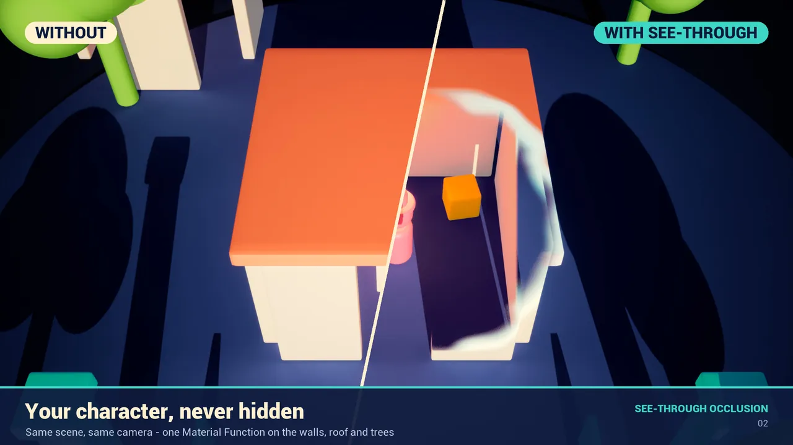
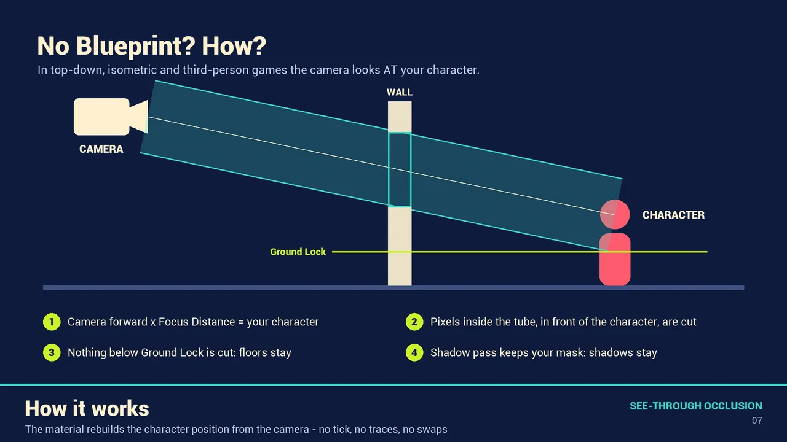
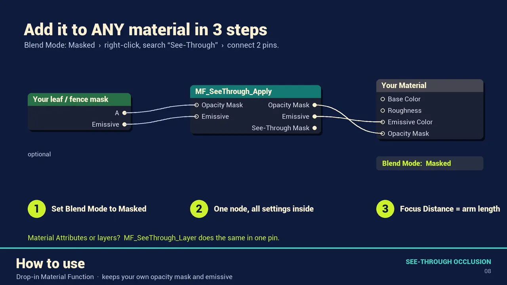
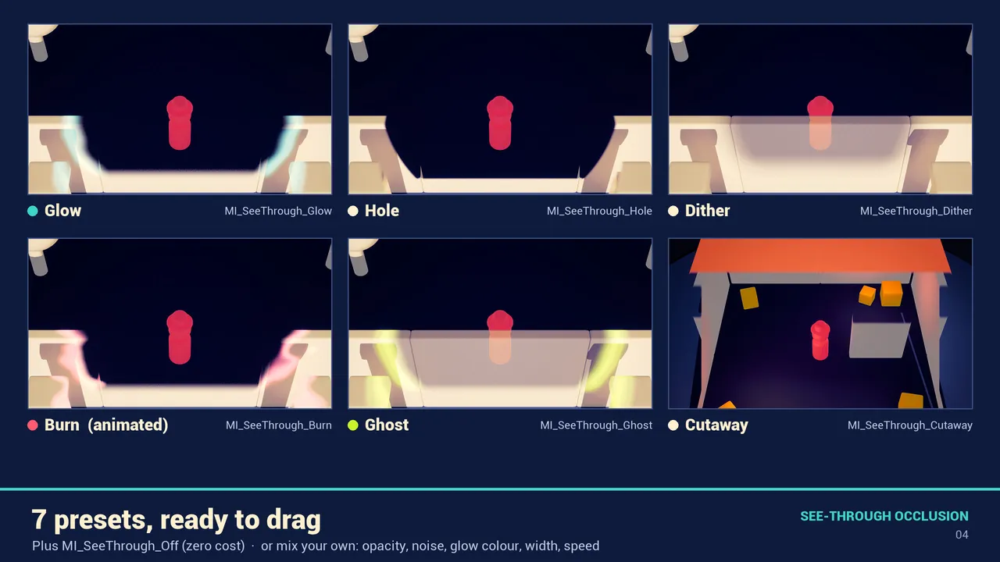
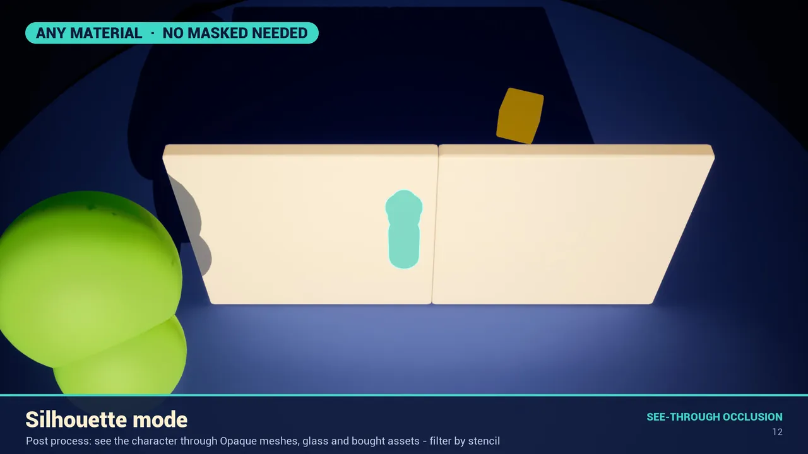
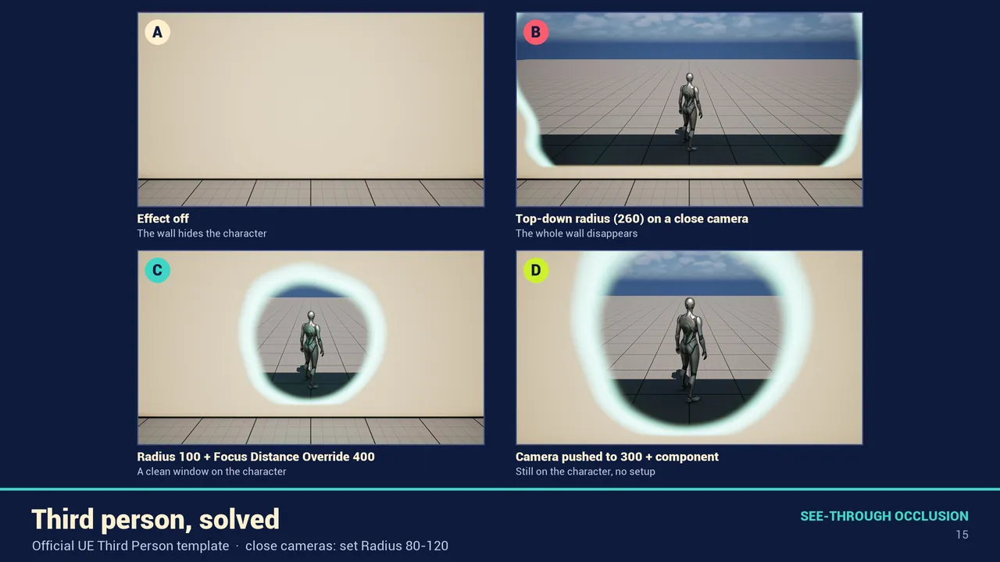
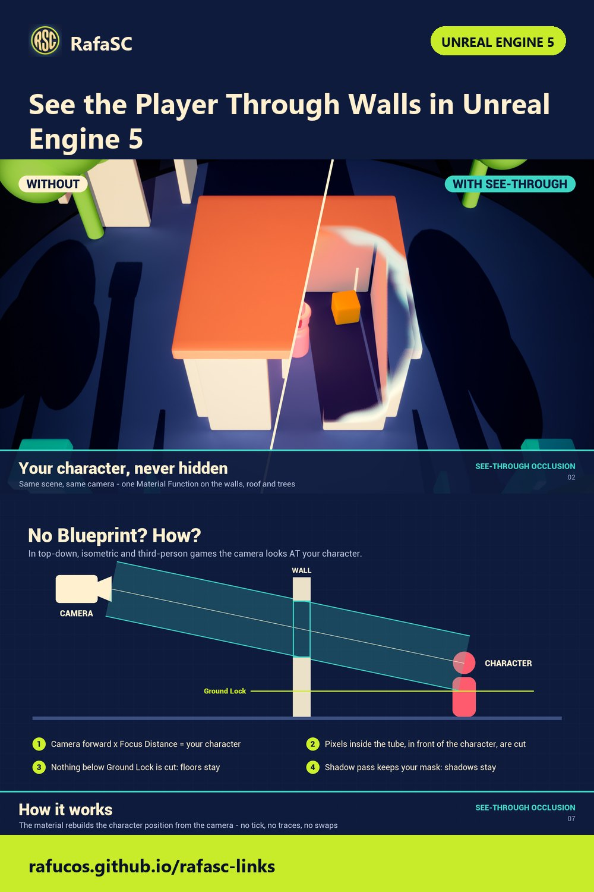

Top-down and isometric cameras
How to see your character through walls in Unreal Engine 5
To see your character through walls in Unreal Engine 5 you either cut a hole in the wall material between the camera and the character, or draw the hidden part of the character on top with a Custom Depth post process. The cut-out gives the Diablo-style open roof and needs Masked materials. The silhouette works with any material, including assets you bought.
By RafaSC, 3D and technical artist · Updated · 7 min read

Three ways games do it
| Method | What happens | Good at | The catch |
|---|---|---|---|
| Cut-out in the wall material | Pixels between the camera and the character are discarded | Per-pixel, no popping, you see the room | Needs Masked materials, which cost more than Opaque |
| Silhouette post process | The hidden part of the character is drawn as a flat colour | Works with Opaque, glass and bought assets | You see the character, not what is around it |
| Hide or fade whole actors | A trace from the camera finds what is in the way and fades it | Easy to understand | Whole walls pop in and out, and you manage traces and actor lists |
The first two can live entirely in materials and post process. That is what the rest of this page covers.

Method 1: a hole that follows the character
The idea is that the wall material itself knows where the character is. In a top-down or isometric game the camera looks at the character, so the character sits at camera position + camera forward x a fixed distance. With that point, the material can cut every pixel inside a tube between the camera and the character.

Two details make it usable in a real game: nothing below a ground height is cut, so floors and rugs stay; and the shadow pass keeps the original mask, so a cut wall still casts its shadow into the room.
With See-Through Occlusion the setup in your own material is:
- Open your wall, roof or tree material. In Details > Material set Blend Mode = Masked.
- Right-click in the graph, type See-Through and add MF_SeeThrough_Apply.
- Connect Opacity Mask to Opacity Mask and Emissive to Emissive Color.
- If the material already had an opacity mask (leaves, fences) or emissive, plug them into the function's inputs.
- Save and create a Material Instance. Every setting is under the See-Through groups.

Then match Focus Distance to your camera. It must be your Spring Arm length (character Blueprint > CameraBoom > Target Arm Length).
| Camera | Spring Arm | What to do |
|---|---|---|
| UE Top Down template (Blueprint) | 1400 | Nothing, it is the default |
| UE Top Down template (C++) | 800 | Material Instance: Focus Distance = 800 |
| UE Third Person template | 400 + collision | Add BP_SeeThroughTarget and set Radius 80 to 120 |
| Camera that zooms | changes | Focus Distance Override in the MPC, or the component |
| Orthographic camera | any | Untick Auto Calculate Ortho Planes, or add the component |
| Several characters | any | Component on each one, Target 1 to 4 |
The cut does not have to be a clean hole:

Method 2: a silhouette through any material
When your meshes cannot be Masked (Opaque-only, glass, bought assets), draw the hidden part of the character instead.
- Project Settings > Rendering > Custom Depth-Stencil Pass = Enabled with Stencil.
- On the character mesh: Details > Render CustomDepth Pass = On. Optional: CustomDepth Stencil Value = 1.
- In a Post Process Volume: Rendering Features > Post Process Materials > add the silhouette material (
MI_PP_SeeThrough_Silhouettein the pack).

A stencil filter lets you show only some meshes, for example players and not enemies.
Zoom, third person and parties
A fixed distance stops being true when the camera zooms, collides with a wall or follows several characters. The fix is to tell the materials the exact position: add the BP_SeeThroughTarget component to the character Blueprint, compile and press Play. It writes one position per frame to a Material Parameter Collection. For a party, add it to each character and choose Target, Target 2, Target 3 or Target 4.
If you only zoom, one node is enough: wherever your zoom changes the arm length, call Set Scalar Parameter Value on MPC_SeeThrough, parameter Focus Distance Override, with the new arm length.

Keep it cheap
Masked materials cost more than Opaque: there is no early depth rejection, and Nanite switches to its programmable rasterizer. The cost depends on how many cut pixels are on screen, so measure it in your own level with stat GPU.
- Use it only on meshes that can block the view: front walls, roofs, trees next to paths. Everything else keeps its Opaque material.
- On Nanite meshes set Pixel Programmable Distance to 1500 to 3000 on the Static Mesh Component. Far meshes render as Opaque. It works on instanced foliage too.
- No tick, no traces and no material swaps are involved. The component writes one vector per frame.
Two gameplay notes. In click-to-move games, set roof and wall collision to ignore the Visibility channel so clicks go through the hole. And dithered styles need TSR or TAA, which is the UE5 default; the clean Hole style works without.
Frequently asked questions
Do I need Blueprints or actor tags to see the player through walls?
Not for a fixed top-down or isometric-style perspective camera: the material finds the character from the camera. For zoom, third person, orthographic cameras or several characters, add the included component. No programming.
Why is the floor being cut around my character?
Focus Distance is bigger than your Spring Arm length (the C++ Top Down template uses 800), or Ground Offset needs to go lower, for example to -80.
Can I do this without Masked materials?
Yes, with the silhouette method: enable Custom Depth-Stencil, turn on Render CustomDepth Pass on the character and add a silhouette post process material. The wall stays Opaque.
Does it work with Nanite, Lumen and foliage?
Yes, including instanced foliage. Use Pixel Programmable Distance on Nanite meshes to keep far meshes on the cheap Opaque path.
How expensive is the cut-out?
The full master material is 411 pixel-shader instructions. The real cost is Masked versus Opaque, so use it on the meshes that can block the view.
Related guides

Save this guide for later. Product used on this page: See-Through Occlusion.